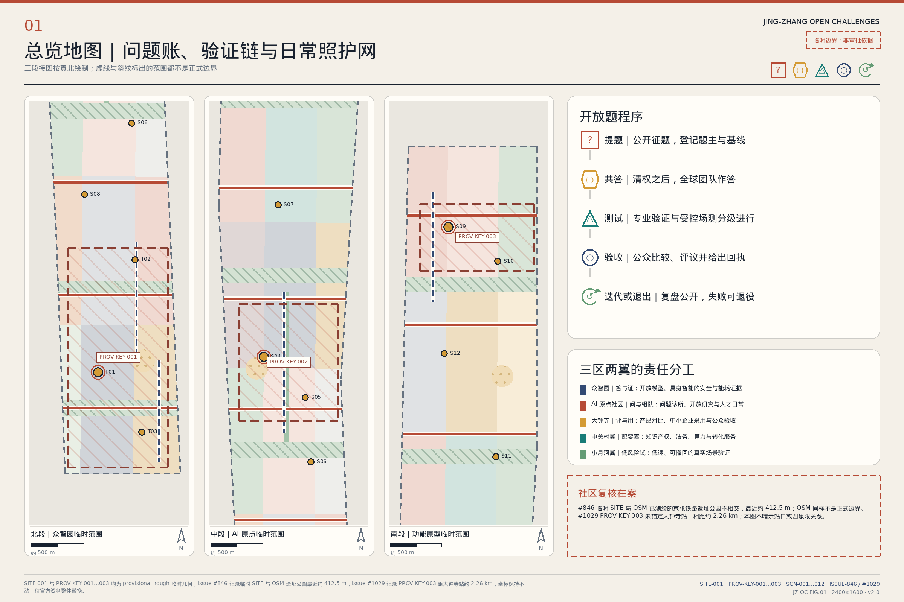
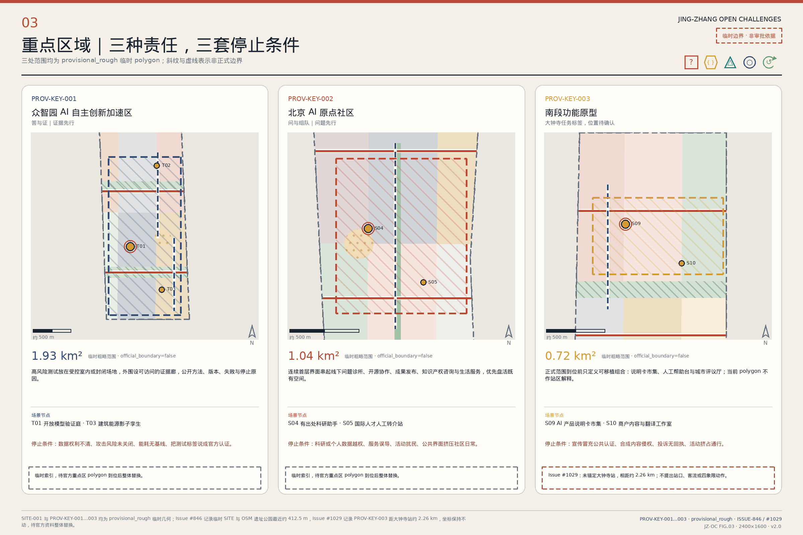
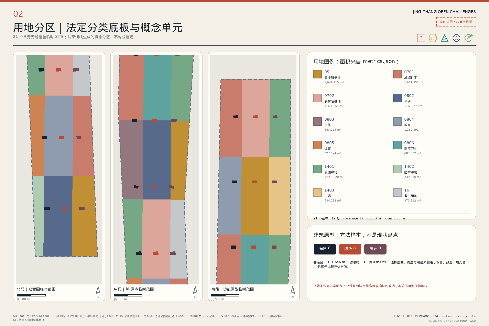
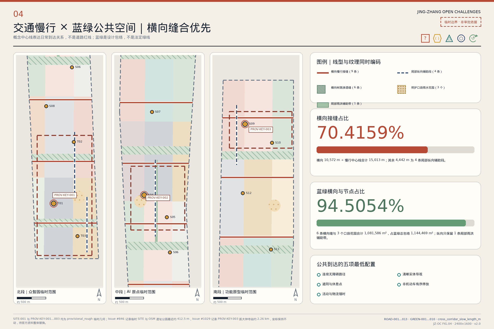
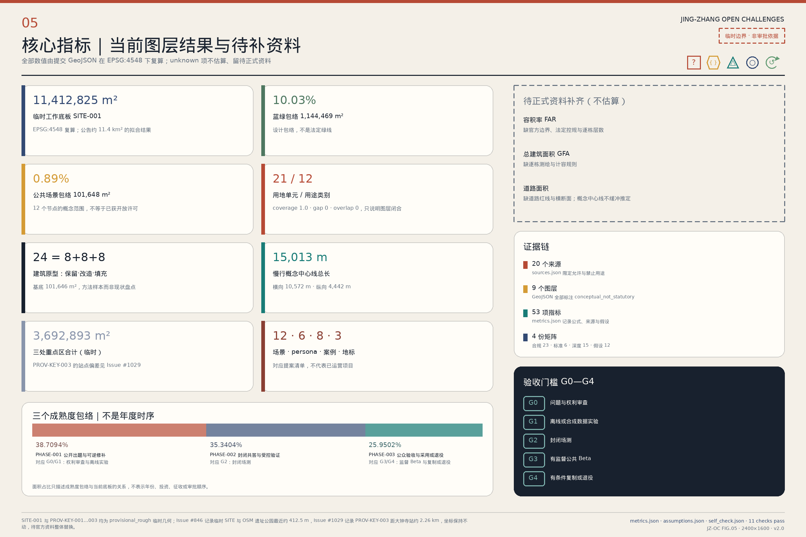

#846 · 临时 SITE 与遗址公园
临时 SITE 与 OSM 已测绘的京张铁路遗址公园不相交，最近约 412.5 m。OSM 同样不是正式边界；本轮坐标保持不动，待官方 SITE 到位后整包替换。
城市出题，全球共答，公众验收。
本方案建议在技术验证之外补上公开程序：谁有权提出问题、谁承担后果、何时可以测试、公众如何验收、失败项目怎样退出。空间上由一册问题账、一条验证链、一张日常照护网和 12 个场景节点承载；运营上用 G0—G4 决策门逐题检查权利、风险、场测、公众采用与年度复盘。
三段接图按真北绘制，展示临时 SITE、三处临时重点区、12 个场景节点与横向日常接缝的相对位置。图中虚线与斜纹范围均为 provisional 粗略几何，不是正式边界。

临时 SITE 与 OSM 已测绘的京张铁路遗址公园不相交，最近约 412.5 m。OSM 同样不是正式边界；本轮坐标保持不动，待官方 SITE 到位后整包替换。
PROV-KEY-003 未锚定大钟寺站，相距约 2.26 km。本轮“大钟寺”仅作任务书标签，不暗示站口、四象限或客流关系，也不自行平移 polygon。
三个层级各有决策尺度，不是同一张图的三次放大。
决定哪些问题值得跨地区、跨机构共同回答。v2.0 拟交付城市问题目录、案例机制转译、年度开放题大会与跨机构共答网络，不新增精确红线。
决定答案如何进入城市日常系统。以 SITE-001 为临时工作底板，组织一册问题账、一条验证链与一张日常照护网。
决定何处、以何种风险等级测试、由谁验收。三处重点区均为临时粗略 polygon，配套 12 张场景卡与 G0—G4 决策门。
三处重点区共用一套评审框架：定位、空间组织、既有建筑、到达与公共空间、AI 场景、运营责任与停止条件。范围均为临时粗略 polygon。

证据先行。高风险测试放在受控室内或封闭场地，外围证据廊向公众公开方法、版本、失败与停止原因。数据权利不清、攻击风险未关闭或能耗无基线时即停止。
问题先行。连续首层界面连接问题诊所、开源协作、成果发布与生活服务。数据越权、服务误导或挤压社区日常时即停止。
大钟寺为任务书标签，位置待确认。正式重点区到位前，只定义可移植的“说明卡市集 + 人工帮助台 + 城市评议厅”组合，不解读为大钟寺站周边。误导宣传、投诉无回执或位置未确认时即停止。
法定用地分类作为可核对底板；问题诊所、验证庭与评议厅属于运营叠加层，不新增法定用地类别。

策略从“造一条轴”改为“补九道横向接缝”：连接社区、校园、园区与公共空间的短距离步行、骑行和无障碍路径优先。

蓝绿系统由 1 条局部雨洪辅助带、6 条横向树荫渗透缝与 3 个口袋照护雨水花园组成，主要为横向日常联系提供遮阴、渗透与停留空间。
保存历史难题、当年题库、证据、失败复盘与版本更正。
展示题目、团队、G0—G4 状态、测试边界、停止理由与开放成果。
提供对比试用、人工解释、意见、申诉与公共回执。
24 个建筑原型按保留、改造、填充各 8 个组成平衡样本，用于展示评估方法，不对应现实地块的拆改留决定。
实施按“项目包 + 责任角色 + 进入门 + 退出门”组织。六类角色均为拟议，需未来授权，本方案不自行任命。
| 项目包 | 牵头角色（拟议） | 首个交付物 |
|---|---|---|
| P01 问题账与权利清查 | 开放题办公室 + 题目所有者（拟议） | Q-ID、基线、权利和期限卡 |
| P02 日常照护问题诊所 | 社区服务方 + 维护组（拟议） | 线下征题、工单和回执 |
| P03 众智园验证环境 | 独立验证组 + 场地运营方（拟议） | T01/T03 测试报告 |
| P04 小月河低风险场测 | 场地运营方 + 安全员（拟议） | T02/S08 场测记录 |
| P05 原点开放研究与人才服务 | 高校/社区接口 + 专业服务方（拟议） | S04/S05 服务清单 |
| P06 南段功能原型公众验收 | 商户/公共服务接口 + 公众验收组（拟议） | S09/S10 对比回执（大钟寺任务标签，位置待确认） |
| P07 三地标与贡献档案 | 文化运营方 + 社区共编组（拟议） | 可逆展陈和权利台账 |
| P08 退出与版本档案 | 开放题办公室 + 独立观察员（拟议） | 事故、暂停、退役和 changelog |
12 个场景分为技术验证、城市服务与公众照护三组。每个节点在问题账中登记题主、允许数据、风险等级、停止条件与人工负责人。
指标分两类：当前图层结果用于核对本版空间与叙事是否一致；待正式资料补齐项声明本轮不能给出的结论。完整 53 项指标、公式与来源文件见 metrics.json。

审查链分四层；正文、结构化数据、图件、报告、PDF 与本页共享同一版指标与风险事实。
征集公告与智能体任务书要求逐项响应，见 compliance_matrix.json。
设计深度项均展开，并分别登记官方资料缺口，见 design_depth_matrix.json。
5 项可用专业标准已响应；建筑工程设计深度官方文件待补，见 standard_matrix.json。
以下为 self_check.json 登记的包级检查结果；最终状态以提交包内文件与仓库校验脚本输出为准。
SITE-001 保持 official_boundary=false，坐标未移动。Issue #846 记录其与 OSM 已测绘遗址公园不相交、最近约 412.5 米；该复核不定义正式红线或遗址公园覆盖。
PROV-KEY-001 至 PROV-KEY-003 均为 provisional_rough。Issue #1029 记录 PROV-KEY-003 距大钟寺站约 2.26 千米；其 confidence 已降为 low，不用于站点、四象限或客流判断。
21 个用地单元覆盖 SITE-001，覆盖率为 1，缝隙面积与重叠面积均为 0。
9 条横向日常接缝总长 10571.751 米，占慢行线总长 70.4159%；4 条纵向线路仅服务重点片区，总长 4441.548 米。
横向树荫缝与节点照护花园合计 1081585.819 平方米，占绿地总面积 94.5054%。
53 项已知指标与最终 GeoJSON 一致；容积率、地上总建筑面积和道路面积缺少法定控制、逐栋测绘与道路红线资料，未填写数值。
中英文静态网页均不引用远程脚本、字体或图片，图件在离线环境下完整显示。
中英文 v2 主稿均为 13 章；sources.json 登记 20 条来源，结构化矩阵覆盖 6 项标准、15 项设计深度、12 个场景、6 类 Persona 和 3 个地标。
中英文主稿采用相同的 13 个章节、场景 ID、指标 ID、来源 ID、标准 ID 与设计深度 ID；95 个正文证据锚点逐项对齐。
问题账通过 Draft 2020-12 schema、固定 12 组 Q/SCN/card 映射、G0 状态组合与跨文件引用检查；12 项均为未核权、候选、G0、未开放的概念示例。
中英文 A3 手册各 8 页，中英文 A0 图板各 5 页，全部为非空页面。
来源、案例允许用途、禁用用途、字体许可和 AI 生成范围已逐项记录。
完整标题、URL、发布与访问日期、允许与禁止用途以 sources.json 为准。背景案例只比较组织机制，不支撑京张的规模、投资、伙伴或规划控制结论。
12 项假设限定本包只能作为概念性城市设计与开放讨论材料；法定、审批、投资或地块结论须等待官方资料与专业复核。
总体范围与三处重点区仅有 provisional_rough 临时 polygon，均为 official_boundary=false、geometry_role=provisional_constraint。
未取得经批准控规、法定用地性质、容积率、高度、密度、退线和公共服务设施控制条件。
未取得逐栋现状测绘、年代、结构、消防、权属、使用状态、层数和高度资料。
未取得宗地、产权、租赁、经营主体、在地使用者与征拆安置信息。
未取得道路红线、交通量、轨道与公交出入口、过街设施、停车供需、铁路安全保护和无障碍连续性调查。
未取得给排水、雨洪、再生水、电力、燃气、热力、通信、地下空间与管线权属资料。
未取得京张铁路相关文物名录、价值评估、保护范围、建设控制地带、工业遗存清单与审批意见。
未取得土壤与地下水污染、噪声振动、热环境、树木、栖息地、洪涝和地质灾害调查。
城市公开出题、全球共答、受控验证、公众评议与开放复盘/退出是一套治理设计假设，尚未形成法定程序或确定运营主体。
面积与长度统一由提交 GeoJSON 投影至 EPSG:4548 计算；计数对应结构化 feature 或正文清单。
Issue #846 的背景测量显示，PROV-SITE-001 与 OSM 已测绘的京张铁路遗址公园不相交，最近距离约 412.5 m；两套资料的用途与精度不同。
Issue #1029 的背景测量显示，PROV-KEY-003 未锚定大钟寺站，距该站约 2.26 km。